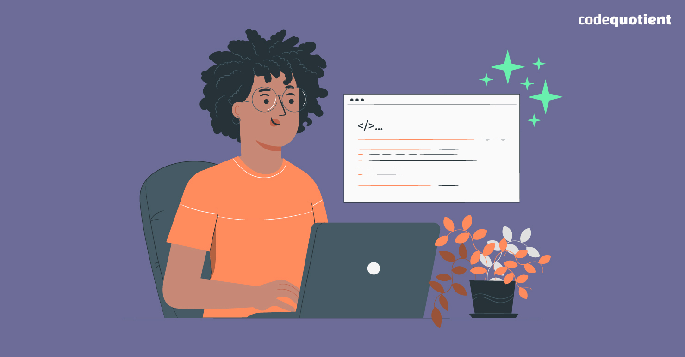
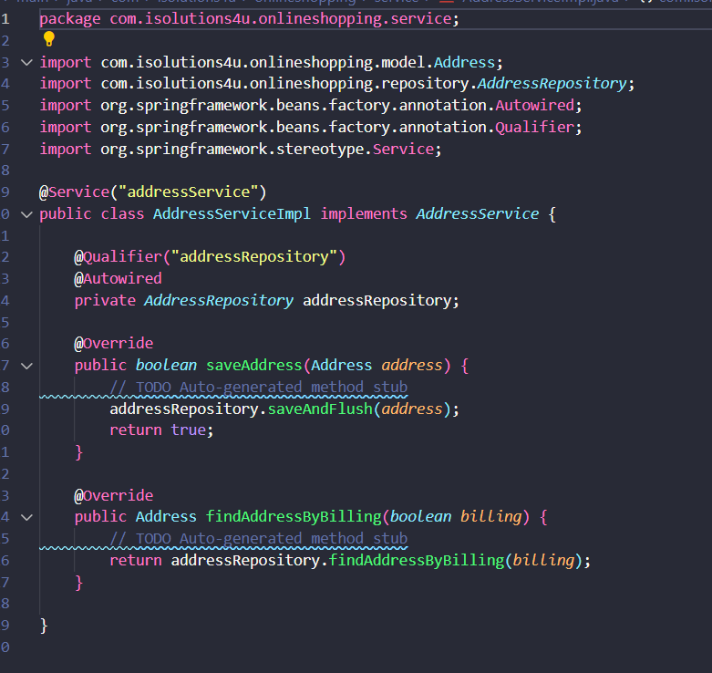
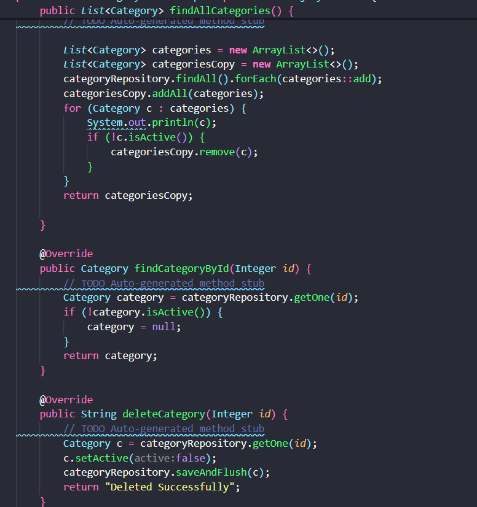
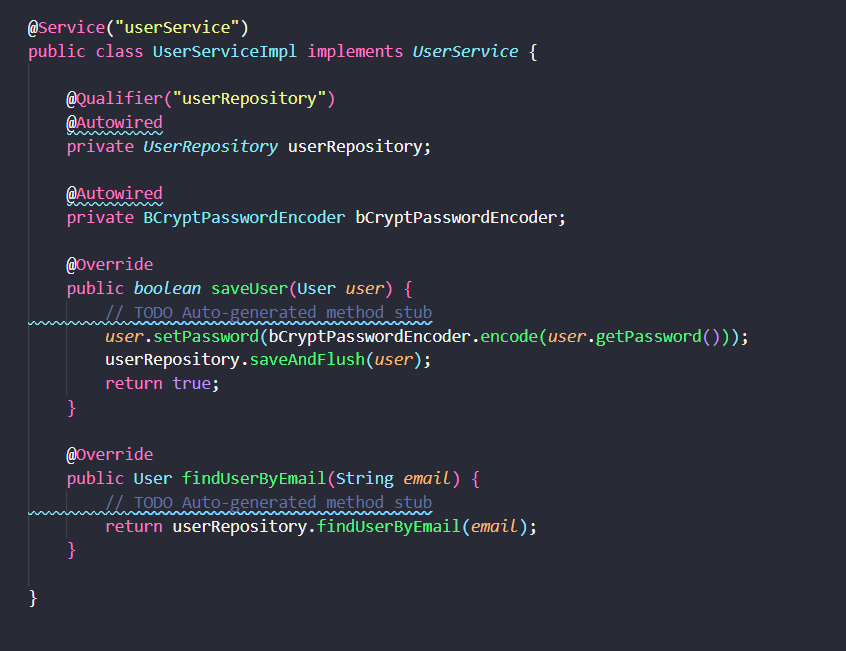

Clean Code: Prácticas y Principios
Para mantener la calidad del código y asegurar un desarrollo sostenible, es crucial seguir principios de diseño y prácticas de desarrollo ágiles. Aquí exploramos algunos de los problemas comunes que violan los principios de Clean Code y cómo se pueden abordar.
¿En qué se está fallando?
Existen varios problemas que deben ser abordados para mejorar la calidad del código. A continuación se describen algunos de los principales errores y violaciones de principios de programación:
Principio "You Aren't Gonna Need It":
La clase AddressServiceImpl contiene métodos como saveAddress() y findAddressByBilling() que pueden no ser necesarios en este momento. Evitar agregar funcionalidades innecesarias ayuda a mantener el código limpio y manejable.
Principio "Keep it Simple, Stupid":
En CategoryServiceImpl, el método findAllCategories() podría simplificarse usando consultas específicas en lugar de filtrar en el código. En deleteCategory(), la eliminación directa sería más simple que marcar como inactivo.
Principio "Don't Repeat Yourself":
En ProductServiceImpl, el filtrado de productos inactivos se repite en varios métodos. Encapsular esta lógica en un método privado reduciría la duplicación y mejoraría la coherencia del código.
Principios de Programación que no se cumplen
Varios principios de programación están siendo violados, lo cual puede conducir a código menos flexible y más difícil de mantener.
Principio de Responsabilidad Única (SRP):
UserServiceImpl maneja la codificación de contraseñas y la gestión de usuarios, violando el SRP. Estos deberían ser dos componentes separados para mantener el código modular y más fácil de probar.
Principio de Abierto/Cerrado (OCP):
En CategoryServiceImpl, el método findAllCategories() debería ser extensible sin modificar la clase. Usar mecanismos como especificaciones o criterios de filtrado sería más acorde con el principio OCP.
Principio de Sustitución de Liskov (LSP):
UserModel debería poder sustituir a User sin cambiar el comportamiento del sistema. Si UserModel tiene atributos o comportamientos adicionales que User no tiene, podría estar violando el LSP.
Principio de Inversión de Dependencia (DIP):
Las clases de servicio están fuertemente acopladas a las implementaciones de repositorio, violando el DIP. Invertir las dependencias para que las clases de servicio dependan de abstracciones sería un mejor enfoque.
Prácticas XP para mejorar la calidad del código
- Integración Continua: Configurar un sistema de CI para automatizar pruebas y construcción del proyecto. Esto permite identificar problemas rápidamente y mantener un código funcional.
- Refactorización Continua: Practicar la refactorización continua, eliminando duplicaciones y simplificando la lógica para mejorar la estructura del código.
- Pruebas Unitarias: Escribir pruebas unitarias automatizadas para garantizar el funcionamiento correcto de partes específicas del código y ejecutarlas automáticamente como parte del proceso de integración continua.